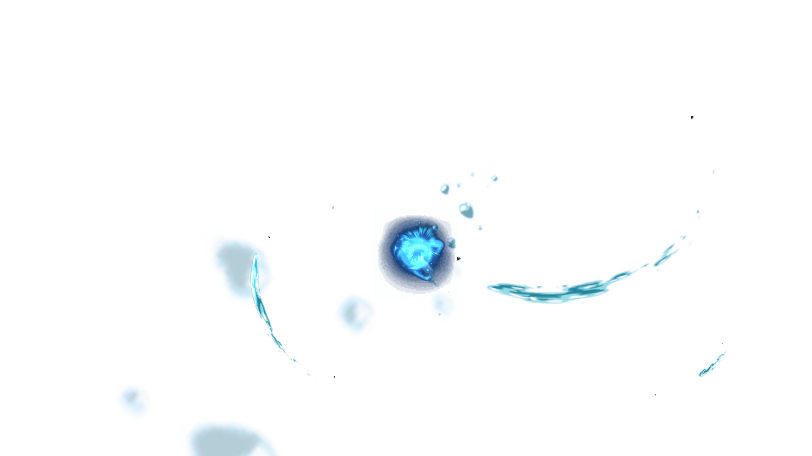
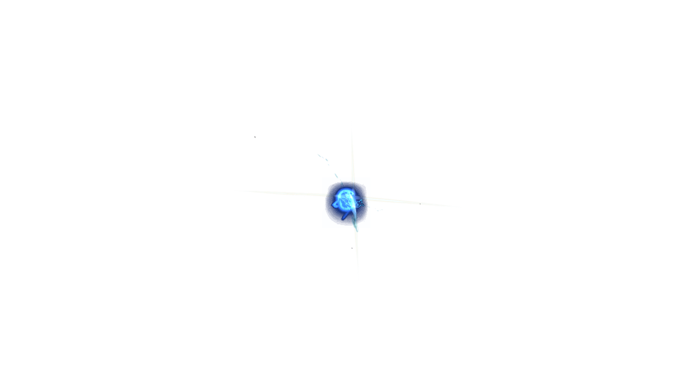
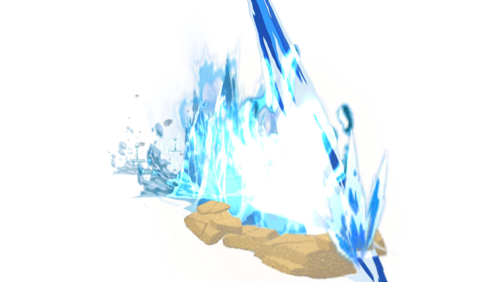
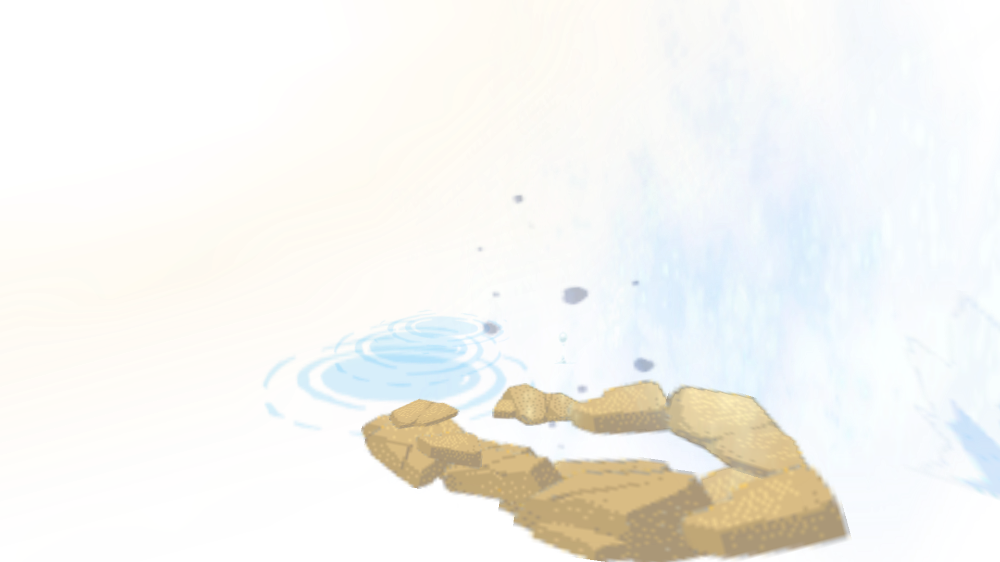
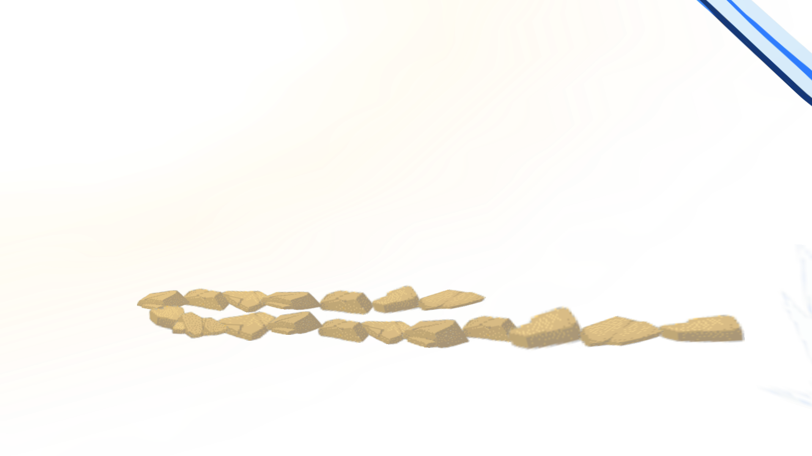

B02 / 042 · 连续动作抽帧
1 / 21810 / 21819 / 21828 / 21837 / 21846 / 21855 / 218 64 / 21873 / 21882 / 21891 / 218
64 / 21873 / 21882 / 21891 / 218
100 / 218 109 / 218118 / 218
109 / 218118 / 218
127 / 218136 / 218145 / 218154 / 218163 / 218
172 / 218
181 / 218190 / 218199 / 218 208 / 218
208 / 218
217 / 218